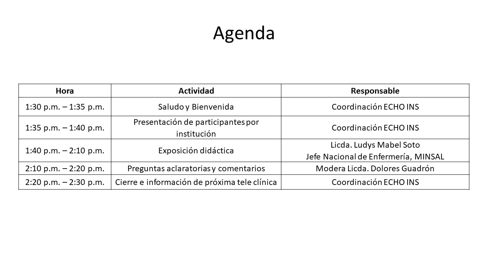

|
Jueves 26 de agosto 2021Hora: 10:00 a.m.Presenta Caso ClínicoDr. Claudia MartínezPresenta Exposición Didáctica:Dr. Mynor Martínez |
|

|
REGÍSTRESE AQUÍ“Generamos información científica que contribuye a identificar los riesgos que afectan la salud de la población salvadoreña” |
© I.N.S. 2021Instituto Nacional de Salud. ins.salud.gob.sv |